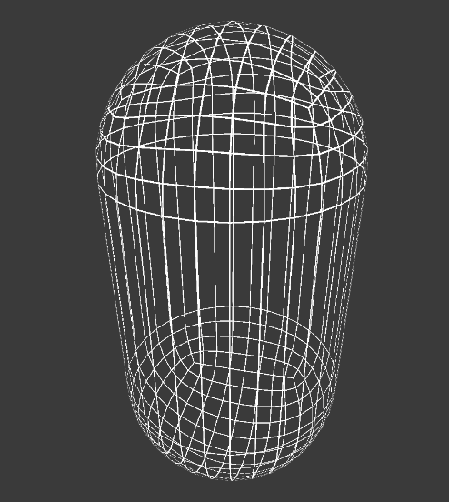

线框绘制
线框渲染
最近写代码快写吐了，写点Shader缓解一下。
今天就复刻一个线框渲染吧，顺便温习一下几何着色器的用法。
参考列在前面
几种方式
总结一下各种实现的方法
- 生成线框模型
- 线框贴图
- 写入UV
- 利用GL来绘制线框
- 几何着色器
- 用几何着色器的
LineStream来生成线段图元 - 用几何着色器来生成片元相对线框的SDF，然后利用SDF绘制线框
- 用几何着色器的
生成线框模型
最直观最简单的方法了，比如Blender就自带线框修改器，可以吧模型之间转成线框模型输出。
缺点是显而易见的，模型的面数成倍增加，模型也不能复用，增加文件体积，以后模型要修改还要再重复这个过程。
好处就是简单，而且不受平台的限制，下面罗列的使用几何着色器的方法在比如Web平台就无法实现。
线框贴图
实现也比较容易，UV全展开不重叠，或者完全相同的重叠也行，然后在需要渲染线框的地方绘制就好。
想要程序化生成可以使用Blender的烘焙，把线框烘焙到贴图上输出即可。
这种方式对贴图的精度要求就很高了，分辨率会很大。
或者改进一下，参照之前模型上喷涂绘制的方式，改成用SDF来做，贴图可以使用很低的分辨率。
但这样程序化生成会比较麻烦
也可以和下面的几何着色器的方式结合起来，用之前喷涂的思路，把SDF烘焙到一张贴图上，就可以在不支持几何着色器的平台上使用了。
写入UV
还有一种骚操作，把模型改成四边面，然后每个面都完全展开UV，然后根据UV判断片元是否是边框。
缺点显而易见，每个面的大小不同，线框的大小也就各不相同了。
利用GL来绘制线框
来自这篇文章，我还真没有想到还有这种做法。
大致思路是读模型顶点，存到内存，然后调用GL.Vertex等方法一根一根的绘制。
感觉有点太暴力了，效率上会很低。但确实也算很简单有效的方法，而且自由度很高，针对一些特定场景也许很有用吧。
几何着色器
这里又大致分为两类
- 直接用几何着色器的
LineStream来生成线段图元。 - 利用几何着色器来生成片元相对线框的SDF，然后利用SDF绘制线框。
先复习一下几何着色器的使用。
Shader "Custom/SimpleGeometryShader" {
Properties {
_Color ("Color", Color) = (1,1,1,1)
}
SubShader {
Tags {"RenderType"="Opaque"}
LOD 200
Pass {
HLSLPROGRAM
#pragma vertex vert
#pragma fragment frag
#pragma geometry geom
#include "Packages/com.unity.render-pipelines.universal/ShaderLibrary/Core.hlsl"
struct appdata {
float4 vertex : POSITION;
};
struct v2g {
float4 vertex : SV_POSITION;
};
struct g2f {
float4 vertex : SV_POSITION;
};
uniform float4 _Color;
v2g vert (appdata v) {
v2g o;
o.vertex = TransformObjectToHClip(v.vertex);
return o;
}
float4 frag (g2f i) : SV_Target {
return _Color;
}
[maxvertexcount(3)]
void geom(triangle v2g IN[3], inout TriangleStream<g2f> Out) {
for(int i = 0; i < 3; i++) {
g2f o;
o.vertex = IN[i].vertex;
Out.Append(o);
}
}
ENDHLSL
}
}
FallBack "Diffuse"
}
这就是最最简单的几何着色器了，什么都没有干，输入什么就输出什么，没有一点改动。
LineStream
第一种很简单：
[maxvertexcount(3)]
void geom(triangle v2g IN[3], inout LineStream<g2f> Out)
{
g2f o1 = (g2f)0;
g2f o2 = (g2f)0;
g2f o3 = (g2f)0;
o1.vertex = IN[0].vertex;
o2.vertex = IN[1].vertex;
o3.vertex = IN[2].vertex;
Out.Append(o1);
Out.Append(o2);
Out.Append(o3);
}
但是这种方式只能生成线段了，如果想要扩充或者调整线段的粗细，就会很麻烦了。
四边形
剔除最长的那条边
[maxvertexcount(4)]
void geom(triangle v2g IN[3], inout LineStream<g2f> Out)
{
g2f o1 = (g2f)0;
g2f o2 = (g2f)0;
g2f o3 = (g2f)0;
o1.vertex = IN[0].vertex;
o2.vertex = IN[1].vertex;
o3.vertex = IN[2].vertex;
float Edge1 = length(IN[0].modelPos - IN[1].modelPos);
float Edge2 = length(IN[1].modelPos - IN[2].modelPos);
float Edge3 = length(IN[2].modelPos - IN[0].modelPos);
if (Edge1 > Edge2 && Edge1 > Edge3)
{
Out.Append(o2);
Out.Append(o3);
Out.RestartStrip();
Out.Append(o3);
Out.Append(o1);
Out.RestartStrip();
}
else if (Edge2 > Edge1 && Edge2 > Edge3)
{
Out.Append(o1);
Out.Append(o2);
Out.RestartStrip();
Out.Append(o3);
Out.Append(o1);
Out.RestartStrip();
}
else if (Edge3 > Edge1 && Edge3 > Edge2)
{
Out.Append(o1);
Out.Append(o2);
Out.RestartStrip();
Out.Append(o2);
Out.Append(o3);
Out.RestartStrip();
}
}
TriangleStream
第二种，生成片元相对线框的SDF。
插值
在g2f中增加一项
struct g2f {
float4 vertex : SV_POSITION;
float3 barycentric : TEXCOORD0;
};
几何着色器中手动赋值，并重新插值。
[maxvertexcount(3)]
void geom(triangle v2g IN[3], inout TriangleStream<g2f> Out) {
g2f o1, o2, o3;
o1.vertex = IN[0].vertex;
o2.vertex = IN[1].vertex;
o3.vertex = IN[2].vertex;
o1.barycentric = float3(1, 0, 0);
o2.barycentric = float3(0, 1, 0);
o3.barycentric = float3(0, 0, 1);
Out.Append(o1);
Out.Append(o2);
Out.Append(o3);
Out.RestartStrip();
}
然后在片元中输出看看：
到边的距离
这就是片元中每个像素到各个顶点的距离了（每个分量），取最小值就是到各个边的距离：
float4 frag (g2f i) : SV_Target {
float minV = min(i.barycentric.x, min(i.barycentric.y, i.barycentric.z));
return float4(minV,minV,minV,1);
}
然后用阈值去掐一下：
剔除
看到背面被剔除了，再修改下，增加Cull Off
float4 frag (g2f i) : SV_Target {
float minV = min(i.barycentric.x, min(i.barycentric.y, i.barycentric.z));
float v = step(minV, _Size);
clip(v-0.5);
return float4(v,v,v,1);
}
均匀线框
还有个问题，这里不同片元所在的三角大小不同，这个胶囊中间的三角形的线框就特别大。
所以在给每个顶点赋值时，不统一使用1，而是在模型空间算出其顶点到对边的距离：
[maxvertexcount(3)]
void geom(triangle v2g IN[3], inout TriangleStream<g2f> Out) {
g2f o1, o2, o3;
o1.vertex = IN[0].vertex;
o2.vertex = IN[1].vertex;
o3.vertex = IN[2].vertex;
float dis1 = GetDistance(IN[1].modelPos,IN[2].modelPos,IN[0].modelPos);
float dis2 = GetDistance(IN[0].modelPos,IN[2].modelPos,IN[1].modelPos);
float dis3 = GetDistance(IN[0].modelPos,IN[1].modelPos,IN[2].modelPos);
o1.barycentric = float3(dis1, 0, 0);
o2.barycentric = float3(0, dis2, 0);
o3.barycentric = float3(0, 0, dis3);
Out.Append(o1);
Out.Append(o2);
Out.Append(o3);
Out.RestartStrip();
}
四边形
再然后就是三角面边四角面，参照原文，剔除边长最长的那条边
float3 param = float3(0, 0, 0);
float Edge1 = length(IN[0].modelPos - IN[1].modelPos);
float Edge2 = length(IN[1].modelPos - IN[2].modelPos);
float Edge3 = length(IN[2].modelPos - IN[0].modelPos);
if (Edge1 > Edge2 && Edge1 > Edge3)
param = float3(0, 0, 1);
else if (Edge2 > Edge1 && Edge2 > Edge3)
param = float3(1, 0, 0);
else if (Edge3 > Edge1 && Edge3 > Edge2)
param = float3(0, 1, 0);
o1.barycentric = float3(dis1, 0, 0) + param;
o2.barycentric = float3(0, dis2, 0) + param;
o3.barycentric = float3(0, 0, dis3) + param;

这里有个小瑕疵，假如剔除的那个边，非常靠近四边形中的另一个三角形的边，他的SDF就不正确了。

框中的被剔除的斜边，非常靠近另一个三角形的边，理应存在，但因为被剔除，所以不显示了。
抗锯齿
一个神奇的函数
float aa(float threshold, float distance)
{
float delta = fwidth(distance) * _wireSmoothing;
return smoothstep((threshold - 1) * delta, (threshold + 1) * delta, distance);
}
fwidth就不解释了，大体意思是锯齿越多的地方，fwidth(distance)值越大，delta越大，所以smoothstep的范围就越大，结果上看就会平滑一点。
但即使启用了抗锯齿，效果和原生自带的线框渲染也没法比，原生是真的把每根线在屏幕上按固定大小画出来，而这种方式必然会导致线距离相机过远而消失。